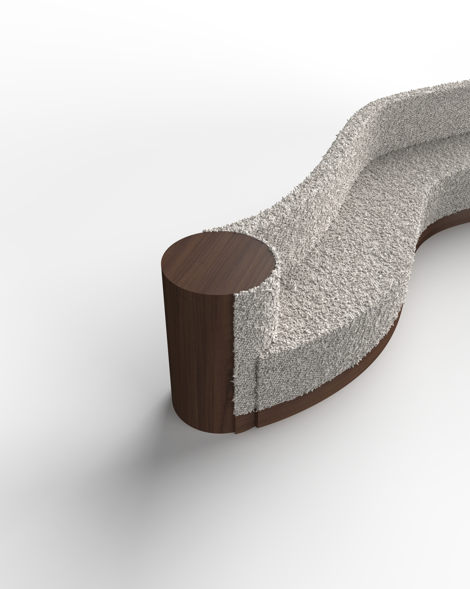

This design explores the balance between soft organic forms and solid architectural elements. The flowing geometry of the seating surface is intentionally contrasted with rigid cylindrical wooden volumes, creating a dialogue between comfort and structure.
The form is designed to feel continuous and sculptural, almost as if carved from a single mass.
Material selection plays a key role in shaping the piece's perception. The textured upholstery enhances the seating area's softness and tactility, while the wooden base elements add visual weight and stability. These wooden volumes also function as integrated side tables, adding both practicality and spatial efficiency.
The wooden components can be manufactured separately and assembled with the upholstered body, allowing for flexibility in material finishes and easier transportation.